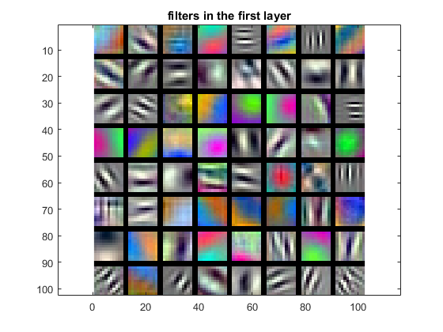

Project 6 / Deep Learning
Example of a error rate change with epoch in deep learning process.
In this project, deep convolutional networks is designed and changed for scene recognition using the MatConvNet toolbox. Back in project 4, a bag of features representations is designed to achieved 60 to 70% accuracy on 15-way scene classification. And this project, after fine tuning the network, a better accuracy can be achieved (in part 2).
The project has two parts:
- Part 1, training a deep network from scratch
- Part 2, fine-tuning a pre-trained deep network
Part 1
The origin code of part 1 can only achieve the accuracy around 25%, hence several steps are needed to improve the performance of convolutional network. The steps are as follow:
(1) Jittering: The learning process calls getBatch() in proj6_part1.m each time it wants training or testing images. Hence in the getBatch() process, I used rand() for each image once the value is greater than 0.5 then the image is flipped (since returning more image than origin will result in error). The detail is as follows:
for i=1:1:total
p=rand(1);
if(p>=0.5)
im(:,:,1,i)=im(:,:,1,i);
else
im(:,:,1,i)=fliplr(im(:,:,1,i));
end
end
(2) zero-centered image: Former images are not zero centered, hence the modification can be made as follow:
y=size(cur_image,1);
x=size(cur_image,2);
avg=mean(mean(cur_image));
imdb.images.data(:,:,1,image_counter) = cur_image-avg*ones(y,x);
Resulting accuracy as iteration of epoch can be seen as follows (which is done without "Jittering").
The final accuracy is around 55%. Hence the process need to be further improved.
(3) Adding drop out layer: Drop out layer randomly turns off network connections at training time to fight overfitting. This prevents a unit in one layer from relying too strongly on a single unit in the previous layer. At test test, all connections are restored which is analogous to taking an average prediction over all of the "thinned" networks. As follows:
net.layers{end+1} = struct('type','dropout','rate',0.5);
Different from the final version, the drop rate here can be 0.5 to achieve accuracy around 50%. (0.3 is used for later)
Results are shown as follow:

|
When Jittering + zero-mean + drop out layer are all applied, the results is shown as follow:
(4) Adding additional convolutional layer: Actually a convolutional layer, but another max-pool layer and relu layer is expected to be implemented. However, adding the final relu layer actually lowered my accuracy, so I just kept the additional as convolution layer and max-pool layer. And also, the epoch is increased to 75. The detailed parameters are shown as follow:
...
net.layers{end+1} = struct('type', 'conv', ...
'weights', {{f*randn(9,9,1,10, 'single'), zeros(1, 10, 'single')}}, ...
'stride', 1, ...
'pad', 0, ...
'name', 'conv1') ;
... %% first layer
%% reduce this window
net.layers{end+1} = struct('type', 'pool', ...
'method', 'max', ...
'pool', [7 7], ...
'stride', 3, ...
'pad', 0) ;
net.layers{end+1} = struct('type', 'relu') ;
net.layers{end+1} = struct('type', 'conv', ...
'weights', {{f*randn(5,5,1,10, 'single'), zeros(1, 10, 'single')}}, ...
'stride', 1, ...
'pad', 0, ...
'name', 'conv1') ;
net.layers{end+1} = struct('type', 'pool', ...
'method', 'max', ...
'pool', [3 3], ...
'stride', 2, ... %% can;t chage here
'pad', 0) ;
net.layers{end+1} = struct('type','dropout','rate',0.3); %%0.5 for no insertion
net.layers{end+1} = struct('type', 'conv', ...
'weights', {{f*randn(6,6,10,15, 'single'), zeros(1, 15, 'single')}}, ...
'stride', 1, ...
'pad', 0, ...
'name', 'fc1') ;
net.layers{end+1} = struct('type', 'softmaxloss') ;
...
The result of combining Jittering, zero-mean, drop out later and additional convolution layer above, the accuracy can reach 48.7% in 75 epochs. As follows:
Part 2
In part two, the deep learning network is not built form scratch, but make modification on a established network instead. The process is as follows:
(1) modification to change grey image into RGB image, resize them to 224*224*3 and substract mean before training.
for i = 1:length(cur_images)
cur_image = imread(fullfile(cur_path, cur_images(i).name));
cur_image = single(cur_image);
if(size(cur_image,3) == 1)
fprintf('grey image found %s\n', fullfile(cur_path, cur_images(i).name));
cur_image = cat(3, cur_image, cur_image, cur_image);
end
...
end
(2) modification on network layer: add two dropout layer between "fc6" and "fc7" as well as "fc7" and "fc8". Also modification is made on the last layer. Details and parameters are as follows:
net.layers{end}={};
net.layers{end-1}={};
net.layers{end-1} = net.layers{end-2}; %%lower the layer of fc7 to insert a dropout layer before it
net.layers{end-2} = net.layers{end-3}; %%lower the layer of fc7 to insert a dropout layer before it
net.layers{end-3} = struct('type','dropout','rate',0.3);
net.layers{end} = struct('type','dropout','rate',0.3); %% the dropout between fc7 and fc8
net.layers{end+1} = struct('type', 'conv', ...
'weights', {{f*randn(3,3,4096,15, 'single'), zeros(1, 15, 'single')}}, ...
'stride', 1, ...
'pad', 1, ...
'name', 'fc8') ; %% new fc8
net.layers{end+1} = struct('type', 'softmaxloss') ; %% new softmaxloss
The resulting accuracy is shown as follow: which is around 90%.
Since the processing time is too long for handing in this project, the picture is given by screen catch. The following epochs continue the trend and kept accuracy around this level.
|  |
Hence, above is the result of part 1 and part 2, achieving accuracy around 49% and 90%. In conclusion, trained deep learning network can be more reliable than hand-made features are classifiers, only if the right layers and parameters are set.